Linear rollout
Imagine the frame after each action; plan on from it.
Agima (Agentic Imagination) trains an agent to imagine before it acts: a single omni model generates images of where its actions lead and plans over these imagined futures.
01Method
Actions and imagined frames are generated in one sequence; each imagined frame is the observation for the next action.
Imagine the frame after each action; plan on from it.
Imagine an alternative action; reject it if it fails.
Imagine complete candidate plans; commit to the one that succeeds.
real frame imagined frame plan that works dead end
02Environments
Trained on the easy split (left), tested on a harder split unseen in training (right).
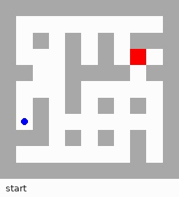
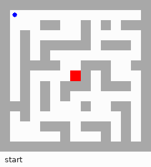
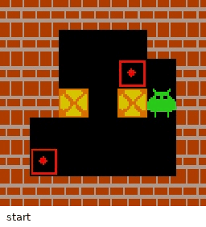
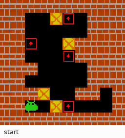
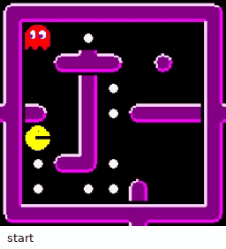
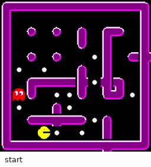
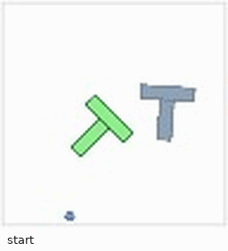
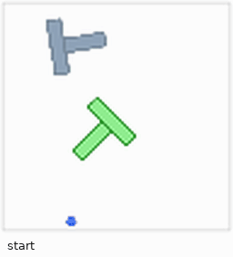
03Results
K = actions executed per real observation. Between observations, Agima plans from its own imagined frames.
04Traps
Test sets where a locally reasonable move fails several steps later. K = ∞.
One push puts the nearer box on the goal beside it. That goal is the only one the farther box can ever reach, so the farther box is left with nowhere to go.
A 2-box level from Agima's Sokoban generator. Test sets: 2, 3 and 4 boxes, 100 puzzles each.
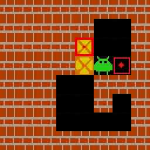
Farther box blocked
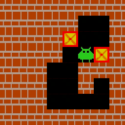
Solved in 18 moves
Two pushes are legal here. Up pins a box to the wall in a row with no goal, and no later move brings it back; right keeps the puzzle solvable.
Test sets: 2, 3 and 4 boxes, 100 puzzles each.
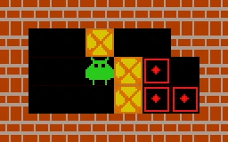
Box pinned to the wall
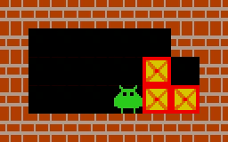
Solved in 13 moves
Eating the nearer food first leaves no escape from the ghost; eating the farther food first clears the level.
The episode of the paper’s Fig. 3. Test grids: 8×8 with 2, 4, 6 or 8 food; 10×10 with 8.
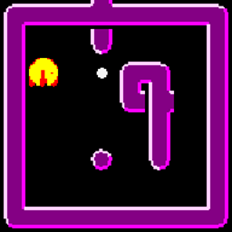
Caught by the ghost
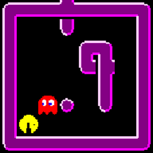
All food eaten
05Agentic RL
RL from the SFT models on three-box Sokoban, with only a binary success reward.
Every imagination variant improves, including on four-box puzzles unseen in RL; the action-only model stays near zero.
Fig. 4b–c Redrawn from the paper. Paper figure
After RL, Agima rolls out one plan step by step and drafts the next only once it foresees a failure. Second plans drop from 79% to 26–31% of episodes.
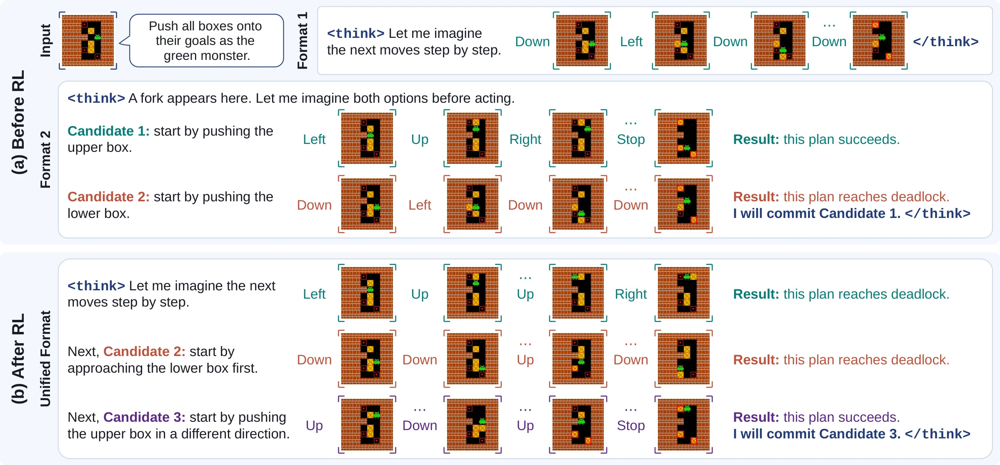
(opens the full-size image)Fig. 6a–b Redrawn from the paper. Paper figure
More branches per episode, placed more often where one push makes the puzzle unsolvable.
Fig. 6c–d Redrawn from the paper. Paper figure
Cite
@article{agima2026,
title = {Training an Imaginative Agent},
author = {Ge, Jiaxin and Zhang, Junyi and Chai, Tianning and Yoo, Hanjun and Wang, Chenyang and Li, Xiuyu and Shi, Weijia and Wang, XuDong and Min, Sewon and Zettlemoyer, Luke and Darrell, Trevor and Feng, Haiwen},
journal = {arXiv preprint},
year = {2026}
}